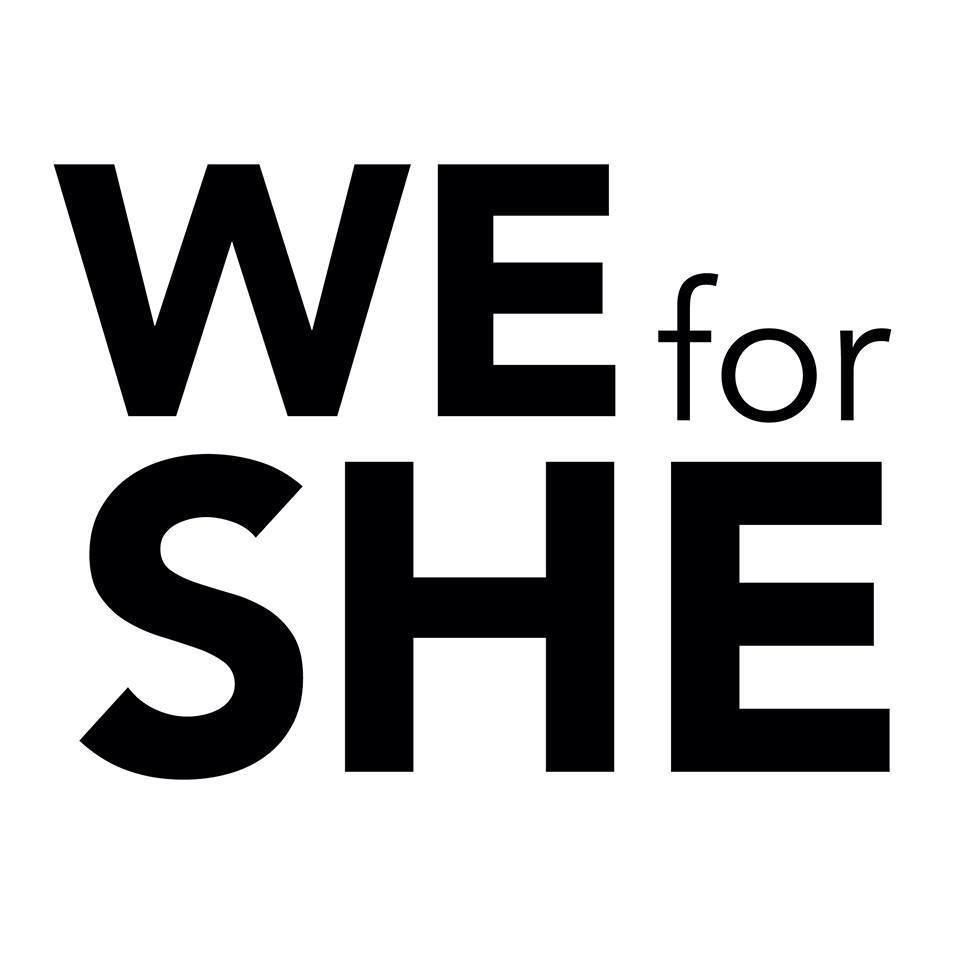

The Kick Off Event
This event will feature several topics, each presented by a host of student organizations, as well as multiple performances.
Topics
- Bystander Awareness
- Presented by: The Wellness Center,
Wellness Advocates,
and Delta Sigma Phi
- Presented by: The Wellness Center,
- Domestic Violence Awareness
- Presented by: TKE,
Alpha Chi Omeda,
and Coalition for the Homeless
- Presented by: TKE,
- Women in Politics
- Presented by: College Democrats
and Inside Government
- Presented by: College Democrats
- Intersectionality
- Presented by: Advocate
and Feminist Forum
- Presented by: Advocate
- Feminism in Religion
- Presented by: Agape
and Muslim Student Association
- Presented by: Agape
- Sex Positivity
- Presented by: CARE,
The Women's Project,
and V-Day Club
- Presented by: CARE,
- Ecofeminism
- Presented by: Oxfam
and Fair Trade Committee
- Presented by: Oxfam
- Access to Education
- Presented by: Amnesty International,
Alliance for Awesome,
and Kappa Kappa Gamma
- Presented by: Amnesty International,
- Street Harassment
- Presented by: Women in Leadership Loyola
and Chi Omega
- Presented by: Women in Leadership Loyola
- Women in STEM
- Presented by: Women in Science and Mathematics,
Phi Sigma Sigma,
and Colleges Against Cancer
- Presented by: Women in Science and Mathematics,
- Sex Trafficking
- Presented by: Refugee Outreach
- Women in Warfare
- Presented by: Ukrainian Society,
Invisible Conflicts,
and Loyola Model United Nations
- Presented by: Ukrainian Society,
- Women in Media
- Presented by: Diminuendo,
((dop)),
and BROAD magazine
- Presented by: Diminuendo,
Performances
- Acafellas at 6:30pm
- Silhouettes at 7:00pm
- LUC Salsa Club
